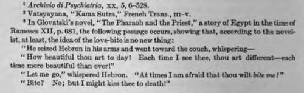

Probable Causation Of The Phenomena
Description
This section is from the book "Human Sexuality", by J. Richardson Parke. Also available from Amazon: Human Sexuality.
Probable Causation Of The Phenomena
The biological character of primitive animal court -i ship, the desire of the female to be forcibly subjugated by the male, is very clearly illustrated by the case of the lady who, when asked by her lover why, during intercourse, she always bit and scratched, and endeavored to repel him, replied—"because I want to be forced, to be hurt, suffocated, thrown down in the struggle;1 and in the Kama Sutra, in a chapter given to the Indian art of love-making, the man is instructed to strike the woman on the back, belly, flanks and buttocks, both before and during intercourse, to increase the sexual desire.3
It is impossible to deny that, although the conventions of modern society enforce its repression, the primitive association between love and pain, the masculine tendency to delight in domination, and the feminine to equally delight in submission, still exists; and on that ground alone is explained the not infrequent cases in which the gentle, timid, but, intellectually and morally, far superior lover is thrown over for the one who is rough and uncouth, to the no small bewilderment of the former.
Plutarch says that Flora, the mistress of Cneius Pompey, found the latter so lovable that she could never leave him without giving him a bile; and Heine mentions, in one of his Romancero, the scars in the neck of Harold, marks of the bites of Edith Swan-neck, by which she was enabled to recognize him.*
It is noticed that dogs and cats will show their affection by gentle bites, and the grip of the male animal on the neck of the female, and the cock on the crest of the hen, during intercourse, probably springs from the same primitive instinct. In any case the tendency to bite during the climax of the sexual excitement is very widespread, being associated by some writers with the origin of the kiss, and giving rise to the homely saying about loving a person well enough to eat him, or her. Indeed, there are lascivious kisses, tarn impresso ore, as Lucian says, viz labia detrahani, inter dtosculandum mordicantes, turn et os aperientes quoque et mammas attrtc-tanles, etc., which partake more of the character of biting than kissing; in which the hearts and souls of the lovers seem to mingle, and which are not the ambrosial salutes which Jupiter gave to Ganymede, or Jason to Medea, or Troilus to Cressida, but what St. Thomas calls eontactus osculum sit moríale peccalum, obscene, meretricious kisses, forerunners always of lust and sexual passion, and with that clinging, sucking, and biting of the lips with which many of us are pleasantly familiar.
In 1894, a man was charged in the London police-court with ill-treating his wife's illegitimate daughter, during many months. Her lips, eyes and hands were bruised from sucking, and her pinafore was covered with blood. Defendant stated he " had bitten the child because he loved it." 1
Ferriani reports a case in which a young man is thus spoken of by his mistress: "He is a strange, maddish youth, who, though he likes sexual intercourse, has worn out my patience with his bites and pinchings. Lately, just before going with me, when I was groaning with desire, he suddenly threw himself upon me, going with me furiously, and at the moment of emission he bit into my right cheek till the blood came. Then he kissed me and begged my pardon; but the fact is he does it every time."1
Shakespeare, whose keen observation even the most minute sexual matters did not escape, makes Cleopatra say, at her death—"The stroke of death is as a lover's pinch, which hurts and is desired;" and Ellis records that a woman once remarked, while viewing Rubens's "Rape of theSa-bines"—"I think those women must have enjoyed being carried off like that."»
As Moll very well observes,' even in man a certain degree of physical pain is quite compatible with intense sexual pleasure; as when a small vagina contracts violently upon the penis, at the moment of ejaculation, the physical ecstasy transforming the pain under such circumstances into a part of the pleasure. In this connection, also, may be mentioned the various appliances which have been used by different peoples during sexual intercourse, mostly at the suggestion of women themselves, to heighten its pleasure. These seem to have been chiefly of Indonesian origin, used first by the peoples of Borneo, Java, Sumatra, the Malay peninsula and the Philippines, and spreading thenee into China, India and Russia.
The "Palang"
In Borneo, the palang, a little rod of bone, is inserted transversely through the head of the penis, the hole being previously made by a surgical operation, and kept open by means of a quill until it has healed. This smooth cross-bar is used during intercourse, of necessity with considerable pain to the female, and not infrequently a small brush is attached to each end of the instrument in addition. The palang-anus is a ring, or collar, of plaited palm-fibre, furnished with a pair of stiff horns of the same material, and is worn by the Dyaks around the neck of the penis. In Java, strips of goat-skin, in the form of a hairy sheath, are similarly worn; and in France, in the eighteenth century, rings, set with wooden knobs, and known as " aides," were used to heighten the pleasure of the woman.
The "Hedge-Hog"
The Chinese " hedge-hog," a wreath of soft feathers, the quills firmly fastened to a silver ring, is slipped over the penis in intercourse; and in South America a similarly constructed horse-hair brush is used. This latter instrument I3 commonly made by the women themselves, and is of very delicate workmanship. Most of the accounts agree that the women attach great importance to this appliance; and Brook Low remarks that "no woman, habituated to its use, will dream of permitting her bed-fellow to go without it."
The "Frilled Cundum"
In Germany, the condom is frequently made with similar "frills," to heighten the woman's excitement; and in evidence that they did so heighten it, Mauriac tells of a patient with warty vegetations on his penis who delayed having them removed, "because his mistress liked him best with them."1
These artificial aids to sexual enjoyment, while regarded now, in many of their forms, simply as ethnological curiosities, were once, and indeed are yet, almost universally employed among Oriental peoples; but while we can conceive that the pain they of necessity produce may be lost in, or even heighten, the pleasure of connection, it seems almost incomprehensible that a delicate, refined woman should subject herself, or that a chivalrous, manly man should subject her, to physical violence and Buffering as a part or element of mutual love. Yet, however it puzzle us as a th»mq of academical discussion, the fact is very real and indisputable.
Continue to:
Tags
sexuality, reporduction, genitals, love, female, humans, passion